В первой части структуры были пластинами, фракталами и туманом. Здесь — четыре новых семейства, специально нацеленных на две морфологии: сети (ветвящиеся кластеры, пена, графы) и блобы (компактные кластеры с ядром). Сто правил прогнаны, измерены и просеяны; в отчёт попали только те, что дают богатую структуру.
Замечание к первой части было точным: среди правил не было ни явных сетей, ни блобов. Пластины SPROUT — это протяжённые фронты, фракталы HELIX — разреженные точки, CYCLIC — фазовая турбулентность. Здесь мы сначала определяем морфологию, а потом придумываем правила под неё:
Куб на всех кадрах — весь текущий объём пространства (161³), структура развивается в центре, голубая сфера — фронт скорости света r = c·t. Справа сверху — увеличенный центр, справа снизу — цветовая шкала.
У клетки фаза 0…Q−1. За такт она принимает фазу большинства шести соседей; при ничьей выбор случайный, малая доля шума не даёт доменам схлопнуться в один. Домены — блобы, их границы — сеть стенок (пена).
Каждой клетке дан случайный порог. Кластер начинается в центре и на каждом шаге поглощает соседа с наименьшим порогом. Получается ветвящаяся сеть, которая обходит «дорогие» области и образует длинные ветви.
В клетке 6 бит направлений. Активные узлы выпускают рёбра в соседние клетки; граф ветвится и замыкается в петли. Это сеть связей, а не масса — её естественно рисовать линиями.
Eden: пустая клетка рождается, если у неё есть занятый сосед; получается компактный огранённый блоб. Опухоль: клетки делятся при достатке питания и потребляют его; в центре питание кончается — появляется некротическое ядро, а при низкой диффузии — инвазивные ветви.
Сгенерировано ровно 100 правил: 25 Potts, 25 Invasion, 25 Bond, 15 Eden, 10 Tumor. Каждое прогнано при L = 65; для каждого посчитаны занятость, число кластеров, surface/volume, компактность, перколяция, длина скелета и ветвления. Затем отсеяны:
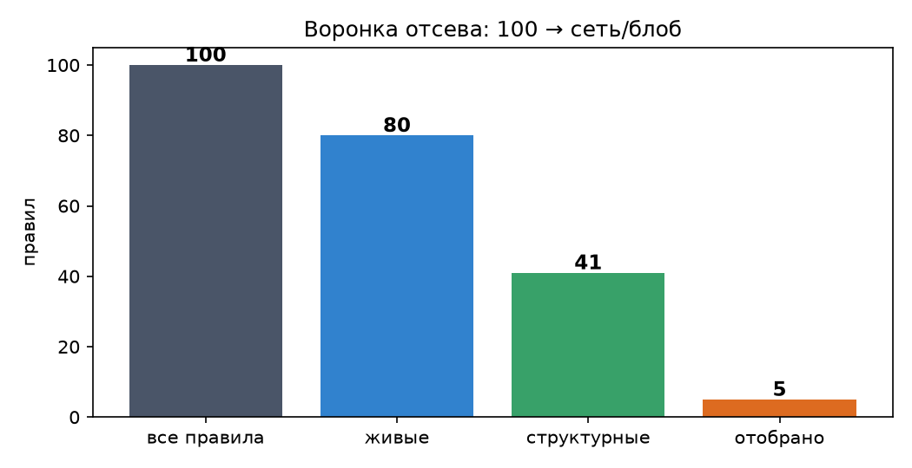
| ID | семейство | правило | занятость | network | blob | ключевая метрика |
|---|---|---|---|---|---|---|
I025 | invasion | Invasion N=20000, α=0.5, bias=0.0 | 0.36% | 0.49 | 0.32 | ветвления 55 |
P015 | potts | Potts Q=8, шум=0.05, T=40, full | 26.4% | 0.96 | 0.16 | стенки 26.4% фрагмента |
E011 | eden | Eden T=20, ρ=0.7, k=1 | 1.2% | 0.04 | 0.74 | compactness 0.38 |
T008 | tumor | Tumor T=50, D=0.05, c=0.4 | 0.2% | 0.39 | 0.65 | некроз 0.1% |
B013 | bond | Bond T=80, p=0.2, loops=1 | — | 1.00 | 0.00 | узлов 770, рёбер 1094 |
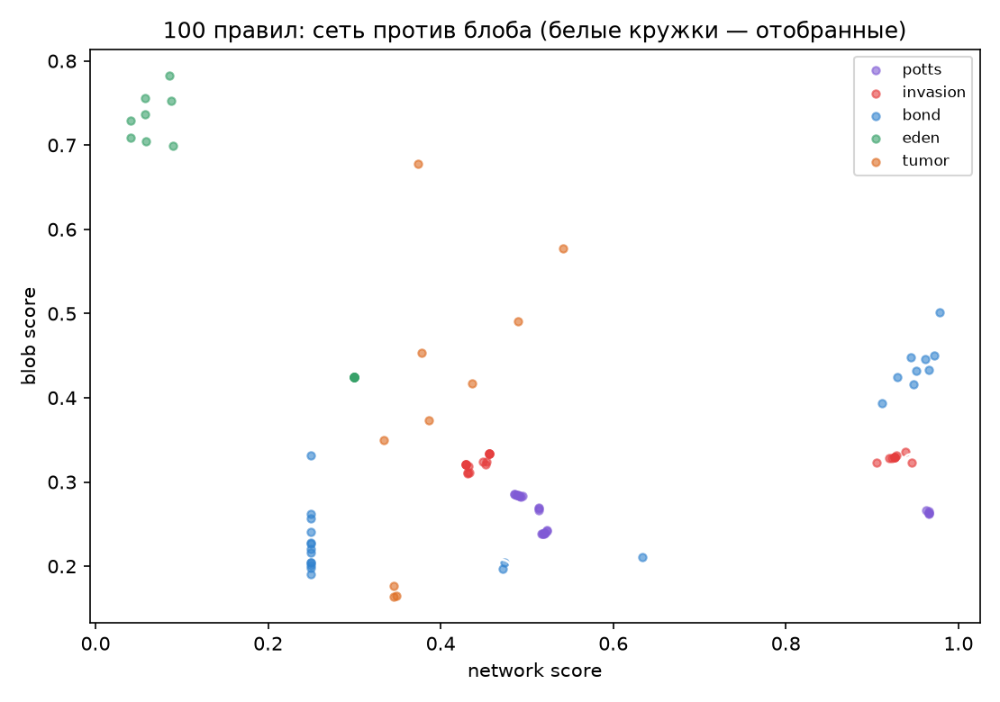
Осталось 41 структурных правил. Для отчёта отобраны пять представителей: три сети (Invasion, Potts-пена, Bond-граф) и два блоба (опухоль, Eden). Их метрики — в таблице выше. Полная таблица всех 100 правил — ниже.
| ID | семейство | правило | занятость | network | blob | вердикт |
|---|---|---|---|---|---|---|
B001 | bond | Bond T=30, p=0.2, loops=1 | 0.01% | 0.25 | 0.23 | мёртвое |
B002 | bond | Bond T=30, p=0.2, loops=0 | 0.01% | 0.25 | 0.20 | мёртвое |
B003 | bond | Bond T=30, p=0.35, loops=1 | 0.06% | 0.47 | 0.20 | слабое |
B004 | bond | Bond T=30, p=0.35, loops=0 | 0.01% | 0.25 | 0.33 | мёртвое |
B005 | bond | Bond T=30, p=0.5, loops=1 | 0.08% | 0.63 | 0.21 | сеть |
B006 | bond | Bond T=30, p=0.5, loops=0 | 0.02% | 0.25 | 0.22 | мёртвое |
B007 | bond | Bond T=50, p=0.2, loops=1 | 0.03% | 0.25 | 0.22 | мёртвое |
B008 | bond | Bond T=50, p=0.2, loops=0 | 0.01% | 0.25 | 0.19 | мёртвое |
B009 | bond | Bond T=50, p=0.35, loops=1 | 0.19% | 0.91 | 0.39 | сеть |
B010 | bond | Bond T=50, p=0.35, loops=0 | 0.01% | 0.25 | 0.26 | мёртвое |
B011 | bond | Bond T=50, p=0.5, loops=1 | 0.27% | 0.95 | 0.45 | сеть |
B012 | bond | Bond T=50, p=0.5, loops=0 | 0.02% | 0.25 | 0.20 | мёртвое |
B013 | bond | Bond T=80, p=0.2, loops=1 | 0.05% | 0.47 | 0.20 | слабое |
B014 | bond | Bond T=80, p=0.2, loops=0 | 0.02% | 0.25 | 0.20 | мёртвое |
B015 | bond | Bond T=80, p=0.35, loops=1 | 0.61% | 0.95 | 0.42 | сеть |
B016 | bond | Bond T=80, p=0.35, loops=0 | 0.01% | 0.25 | 0.26 | мёртвое |
B017 | bond | Bond T=80, p=0.5, loops=1 | 1.06% | 0.97 | 0.45 | сеть |
B018 | bond | Bond T=80, p=0.5, loops=0 | 0.03% | 0.25 | 0.20 | мёртвое |
B019 | bond | Bond T=50, p=0.1, loops=1 | 0.01% | 0.25 | 0.24 | мёртвое |
B020 | bond | Bond T=50, p=0.65, loops=1 | 0.75% | 0.95 | 0.43 | сеть |
B021 | bond | Bond T=50, p=0.8, loops=1 | 1.18% | 0.97 | 0.43 | сеть |
B022 | bond | Bond T=50, p=0.95, loops=1 | 1.71% | 0.98 | 0.50 | сеть |
B023 | bond | Bond T=50, p=0.15, loops=1 | 0.02% | 0.25 | 0.23 | мёртвое |
B024 | bond | Bond T=50, p=0.45, loops=1 | 0.17% | 0.93 | 0.42 | сеть |
B025 | bond | Bond T=50, p=0.7, loops=1 | 0.81% | 0.96 | 0.45 | сеть |
E001 | eden | Eden T=12, ρ=0.3, k=1 | 1.41% | 0.09 | 0.70 | блоб |
E002 | eden | Eden T=12, ρ=0.3, k=2 | 0.01% | 0.30 | 0.43 | мёртвое |
E003 | eden | Eden T=12, ρ=0.5, k=1 | 1.53% | 0.09 | 0.75 | блоб |
E004 | eden | Eden T=12, ρ=0.5, k=2 | 0.01% | 0.30 | 0.43 | мёртвое |
E005 | eden | Eden T=12, ρ=0.7, k=1 | 1.63% | 0.09 | 0.78 | блоб |
E006 | eden | Eden T=12, ρ=0.7, k=2 | 0.01% | 0.30 | 0.43 | мёртвое |
E007 | eden | Eden T=20, ρ=0.3, k=1 | 5.39% | 0.06 | 0.70 | блоб |
E008 | eden | Eden T=20, ρ=0.3, k=2 | 0.01% | 0.30 | 0.43 | мёртвое |
E009 | eden | Eden T=20, ρ=0.5, k=1 | 5.67% | 0.06 | 0.74 | блоб |
E010 | eden | Eden T=20, ρ=0.5, k=2 | 0.01% | 0.30 | 0.43 | мёртвое |
E011 | eden | Eden T=20, ρ=0.7, k=1 | 5.93% | 0.06 | 0.76 | блоб |
E012 | eden | Eden T=20, ρ=0.7, k=2 | 0.01% | 0.30 | 0.43 | мёртвое |
E013 | eden | Eden T=30, ρ=0.3, k=1 | 16.41% | 0.04 | 0.71 | блоб |
E014 | eden | Eden T=30, ρ=0.3, k=2 | 0.01% | 0.30 | 0.43 | мёртвое |
E015 | eden | Eden T=30, ρ=0.5, k=1 | 16.99% | 0.04 | 0.73 | блоб |
I001 | invasion | Invasion N=5000, α=0.5, bias=0.0 | 1.82% | 0.43 | 0.32 | слабое |
I002 | invasion | Invasion N=5000, α=0.5, bias=0.3 | 1.82% | 0.43 | 0.32 | слабое |
I003 | invasion | Invasion N=5000, α=0.8, bias=0.0 | 1.82% | 0.43 | 0.32 | слабое |
I004 | invasion | Invasion N=5000, α=0.8, bias=0.3 | 1.82% | 0.43 | 0.31 | слабое |
I005 | invasion | Invasion N=5000, α=1.0, bias=0.0 | 1.82% | 0.43 | 0.32 | слабое |
I006 | invasion | Invasion N=5000, α=1.0, bias=0.3 | 1.82% | 0.43 | 0.31 | слабое |
I007 | invasion | Invasion N=5000, α=1.3, bias=0.0 | 1.82% | 0.43 | 0.32 | слабое |
I008 | invasion | Invasion N=5000, α=1.3, bias=0.3 | 1.82% | 0.43 | 0.31 | слабое |
I009 | invasion | Invasion N=9000, α=0.5, bias=0.0 | 3.28% | 0.46 | 0.33 | слабое |
I010 | invasion | Invasion N=9000, α=0.5, bias=0.3 | 3.28% | 0.90 | 0.32 | сеть |
I011 | invasion | Invasion N=9000, α=0.8, bias=0.0 | 3.28% | 0.46 | 0.33 | слабое |
I012 | invasion | Invasion N=9000, α=0.8, bias=0.3 | 3.28% | 0.45 | 0.32 | слабое |
I013 | invasion | Invasion N=9000, α=1.0, bias=0.0 | 3.28% | 0.46 | 0.33 | слабое |
I014 | invasion | Invasion N=9000, α=1.0, bias=0.3 | 3.28% | 0.45 | 0.32 | слабое |
I015 | invasion | Invasion N=9000, α=1.3, bias=0.0 | 3.28% | 0.46 | 0.33 | слабое |
I016 | invasion | Invasion N=9000, α=1.3, bias=0.3 | 3.28% | 0.45 | 0.32 | слабое |
I017 | invasion | Invasion N=14000, α=0.5, bias=0.0 | 5.10% | 0.93 | 0.33 | сеть |
I018 | invasion | Invasion N=14000, α=0.5, bias=0.3 | 5.10% | 0.94 | 0.34 | сеть |
I019 | invasion | Invasion N=14000, α=0.8, bias=0.0 | 5.10% | 0.93 | 0.33 | сеть |
I020 | invasion | Invasion N=14000, α=0.8, bias=0.3 | 5.10% | 0.92 | 0.33 | сеть |
I021 | invasion | Invasion N=14000, α=1.0, bias=0.0 | 5.10% | 0.93 | 0.33 | сеть |
I022 | invasion | Invasion N=14000, α=1.0, bias=0.3 | 5.10% | 0.92 | 0.33 | сеть |
I023 | invasion | Invasion N=14000, α=1.3, bias=0.0 | 5.10% | 0.93 | 0.33 | сеть |
I024 | invasion | Invasion N=14000, α=1.3, bias=0.3 | 5.10% | 0.93 | 0.33 | сеть |
I025 | invasion | Invasion N=20000, α=0.5, bias=0.0 | 7.28% | 0.95 | 0.32 | сеть |
P001 | potts | Potts Q=4, шум=0.02, T=40, full | 1.50% | 0.49 | 0.29 | слабое |
P002 | potts | Potts Q=4, шум=0.02, T=80, block | 1.49% | 0.49 | 0.29 | слабое |
P003 | potts | Potts Q=4, шум=0.05, T=40, full | 3.80% | 0.51 | 0.27 | слабое |
P004 | potts | Potts Q=4, шум=0.05, T=80, block | 3.69% | 0.51 | 0.27 | слабое |
P005 | potts | Potts Q=4, шум=0.1, T=40, full | 7.61% | 0.52 | 0.24 | слабое |
P006 | potts | Potts Q=4, шум=0.1, T=80, block | 7.50% | 0.52 | 0.24 | слабое |
P007 | potts | Potts Q=6, шум=0.02, T=40, full | 1.65% | 0.49 | 0.28 | слабое |
P008 | potts | Potts Q=6, шум=0.02, T=80, block | 1.65% | 0.49 | 0.28 | слабое |
P009 | potts | Potts Q=6, шум=0.05, T=40, full | 4.12% | 0.51 | 0.27 | слабое |
P010 | potts | Potts Q=6, шум=0.05, T=80, block | 4.13% | 0.96 | 0.27 | сеть |
P011 | potts | Potts Q=6, шум=0.1, T=40, full | 8.26% | 0.52 | 0.24 | слабое |
P012 | potts | Potts Q=6, шум=0.1, T=80, block | 8.44% | 0.52 | 0.24 | слабое |
P013 | potts | Potts Q=8, шум=0.02, T=40, full | 1.74% | 0.49 | 0.28 | слабое |
P014 | potts | Potts Q=8, шум=0.02, T=80, block | 1.77% | 0.49 | 0.28 | слабое |
P015 | potts | Potts Q=8, шум=0.05, T=40, full | 4.27% | 0.97 | 0.26 | сеть |
P016 | potts | Potts Q=8, шум=0.05, T=80, block | 4.45% | 0.97 | 0.26 | сеть |
P017 | potts | Potts Q=8, шум=0.1, T=40, full | 8.68% | 0.52 | 0.24 | слабое |
P018 | potts | Potts Q=8, шум=0.1, T=80, block | 8.74% | 0.52 | 0.24 | слабое |
P019 | potts | Potts Q=12, шум=0.02, T=40, full | 1.85% | 0.49 | 0.28 | слабое |
P020 | potts | Potts Q=12, шум=0.02, T=80, block | 1.78% | 0.49 | 0.28 | слабое |
P021 | potts | Potts Q=12, шум=0.05, T=40, full | 4.59% | 0.97 | 0.26 | сеть |
P022 | potts | Potts Q=12, шум=0.05, T=80, block | 4.55% | 0.97 | 0.26 | сеть |
P023 | potts | Potts Q=12, шум=0.1, T=40, full | 9.26% | 0.52 | 0.24 | слабое |
P024 | potts | Potts Q=12, шум=0.1, T=80, block | 9.24% | 0.52 | 0.24 | слабое |
P025 | potts | Potts Q=16, шум=0.02, T=40, full | 1.88% | 0.49 | 0.28 | слабое |
T001 | tumor | Tumor T=25, D=0.2, c=0.4 | 0.54% | 0.38 | 0.45 | слабое |
T002 | tumor | Tumor T=40, D=0.2, c=0.4 | 1.33% | 0.44 | 0.42 | слабое |
T003 | tumor | Tumor T=40, D=0.35, c=0.2 | 0.08% | 0.35 | 0.16 | слабое |
T004 | tumor | Tumor T=40, D=0.1, c=0.5 | 3.19% | 0.54 | 0.58 | блоб |
T005 | tumor | Tumor T=60, D=0.25, c=0.3 | 0.27% | 0.33 | 0.35 | слабое |
T006 | tumor | Tumor T=30, D=0.15, c=0.6 | 1.16% | 0.49 | 0.49 | слабое |
T007 | tumor | Tumor T=50, D=0.4, c=0.15 | 0.06% | 0.35 | 0.18 | слабое |
T008 | tumor | Tumor T=50, D=0.05, c=0.4 | 6.63% | 0.37 | 0.68 | блоб |
T009 | tumor | Tumor T=35, D=0.3, c=0.35 | 0.09% | 0.35 | 0.16 | слабое |
T010 | tumor | Tumor T=70, D=0.2, c=0.45 | 1.45% | 0.39 | 0.37 | слабое |
Кластер из 15 000 клеток в кубе 161³. Слева — масса, справа — скелет: 11 345 узлов и 17 852 ребра. Скелет — это и есть сеть: длинные ветви, развилки, обходы плотных областей. Фронт r = c·t = 50 показан голубой сферой.
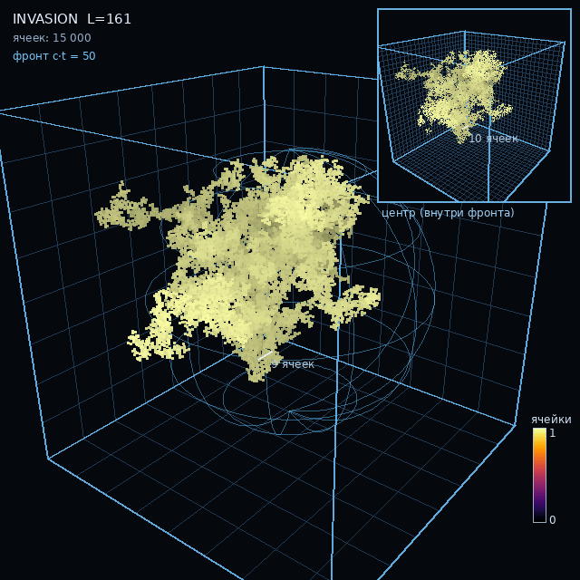
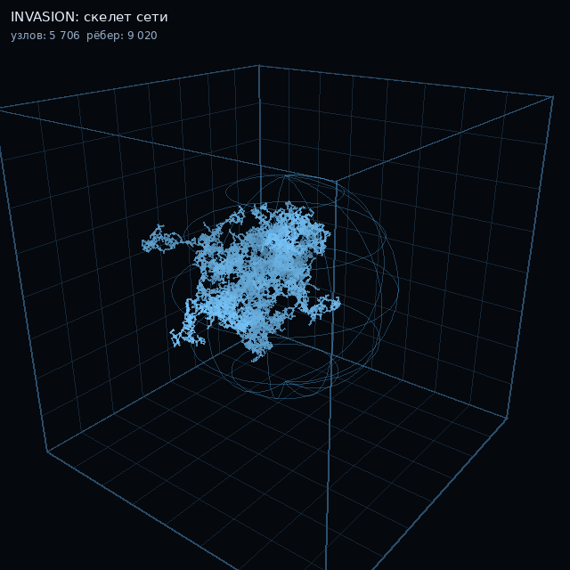
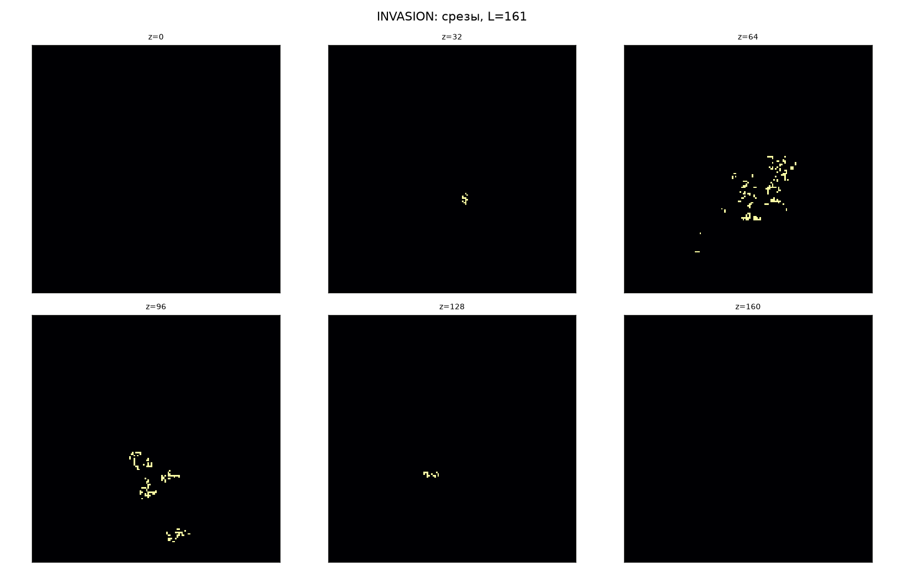
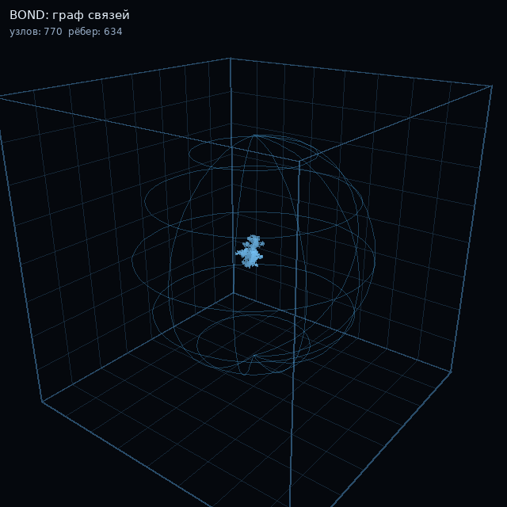
Пена — это сеть поверхностей. На 3D-кадре показан центральный фрагмент 41³ (иначе пена заполняет весь куб); на срезах — клеточное строение: цветные домены, чёрные стенки.
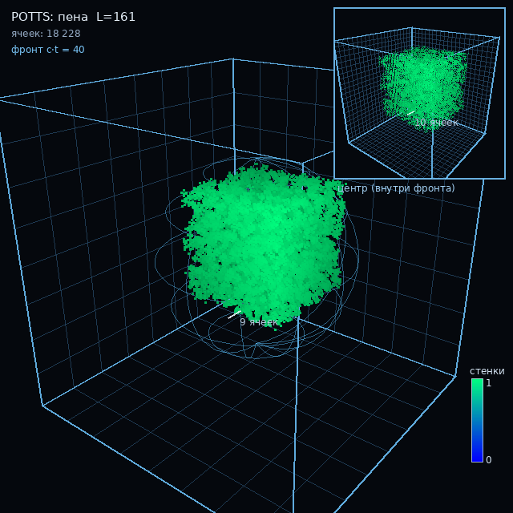
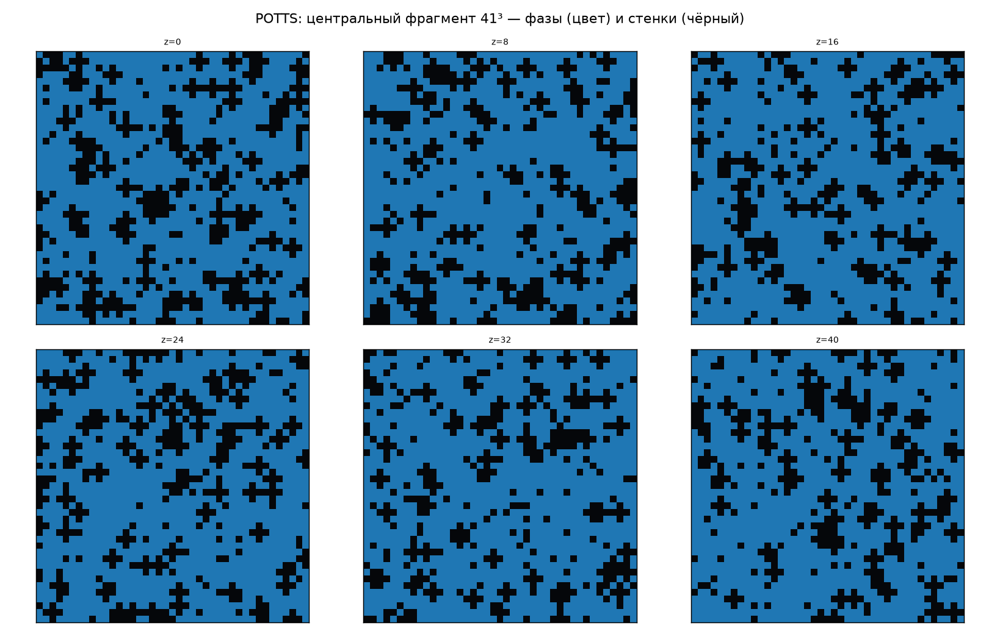
Блоб — компактный кластер. Опухоль даёт округлое тело с тёмным некротическим ядром; Eden — огранённый кристаллический блоб. Оба растут из центра, фронт окружает их, а не заполняет куб.
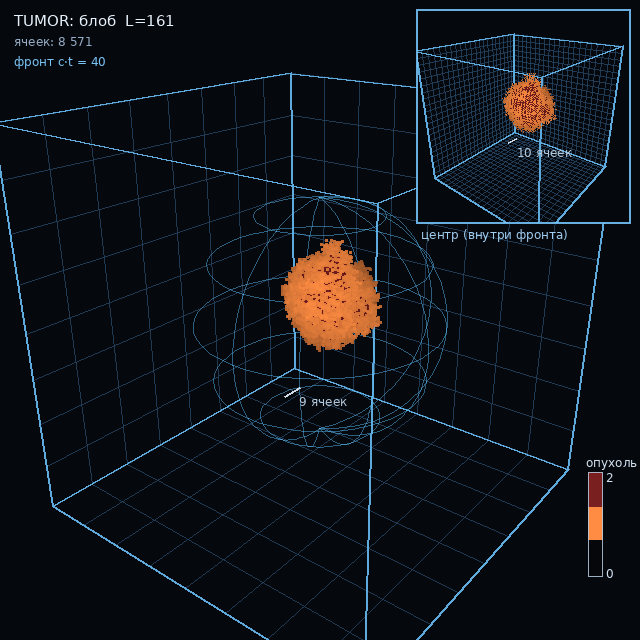
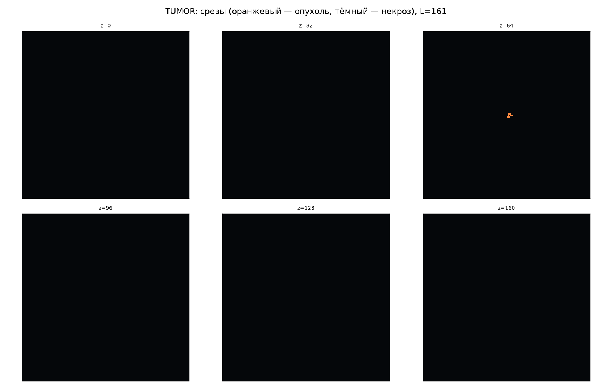
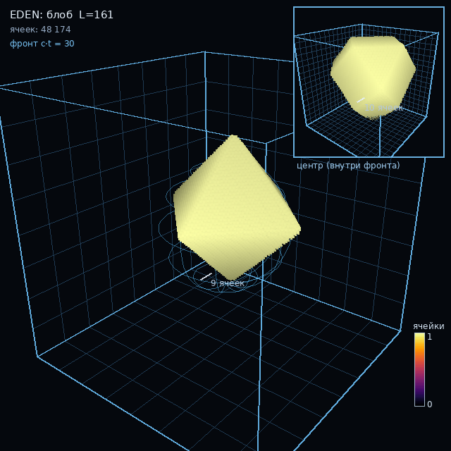
S/V — поверхность на единицу объёма; compactness — объём кластера, делённый на объём описанной сферы; перколяция — кластер соединяет противоположные стенки. Это эвристики для ранжирования, а не физические величины; сырые числа приведены в таблицах.
Именно поэтому в отчёт попали не «самые плотные», а самые структурные: инвазия с ветвлениями, пена с доменами и блобы с ядром.
| Проверка | Статус | Значение |
|---|---|---|
| всего правил = 100 | PASS | 100 |
| есть живые структуры | PASS | 41 |
| есть сети и блобы | PASS | {'сети': 25, 'блобы': 10} |
| 100 правил в скрининге | PASS | 100 |
| отобрано >= 4 правил | PASS | 5 |
| есть сеть (скелет) и блоб | PASS | True |
| инвазионная сеть не пуста | PASS | 15000 |
| блоб Eden компактен | PASS | 0.38 |
Проверки выполняются в scripts/run_ca3d2.py и scripts/run_ca3d2_deep.py; таблица собирается из results/ca3d2/*.json.
src/ca3d_morph.py — Potts, Tumor, Invasion, Bondsrc/ca3d_shape.py — network/blob/foam, скелет, перколяцияsrc/ca3d_net.py — графы и скелеты; src/ca3d_render.py — вокселиscripts/run_ca3d2.py — 100 правил, отсев, screening.jsonscripts/run_ca3d2_deep.py — 5 представителей, картинки, deep.jsonscripts/build_ca3d2_report.pyПервая часть исследования — report/ca3d.html: инфляционная решётка, пространство правил, SPROUT/HELIX/TOPPLE/TWIN, полный куб и фронт.